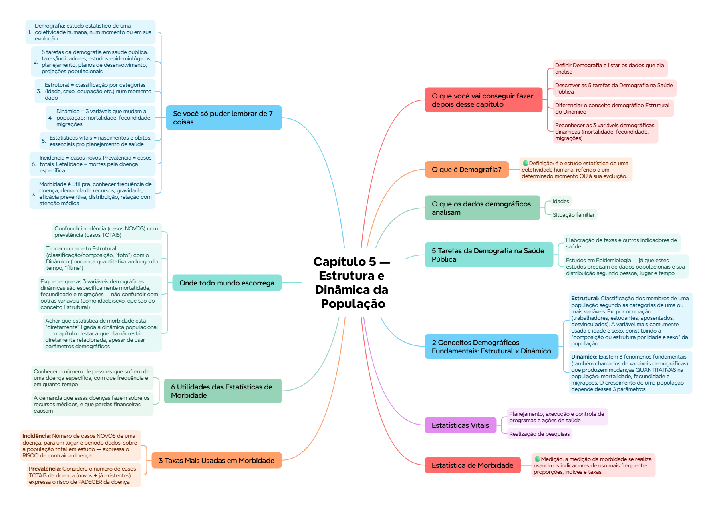

ClinicusMed · Dossiê Clinicus — Padrão de Excelência
A Demografia é o estudo interdisciplinar das populações humanas, tratando das características sociais da população e seu desenvolvimento ao longo do tempo.
| Conceito | Definição |
|---|---|
| Estrutural | Classificação dos membros de uma população segundo as categorias de uma ou mais variáveis. Ex: por ocupação (trabalhadores, estudantes, aposentados, desvinculados). A variável mais comumente usada é idade e sexo, constituindo a "composição ou estrutura por idade e sexo" da população |
| Dinâmico | Existem 3 fenômenos fundamentais (também chamados de variáveis demográficas) que produzem mudanças QUANTITATIVAS na população: mortalidade, fecundidade e migrações. O crescimento de uma população depende desses 3 parâmetros |
As Estatísticas Vitais são necessárias pra:
Embora não estejam diretamente relacionadas à dinâmica populacional, o estudo da morbidade nas populações humanas também requer aplicação de alguns parâmetros demográficos.
| Taxa | Definição |
|---|---|
| Incidência | Número de casos NOVOS de uma doença, para um lugar e período dados, sobre a população total em estudo — expressa o RISCO de contrair a doença |
| Prevalência | Considera o número de casos TOTAIS da doença (novos + já existentes) — expressa o risco de PADECER da doença |
| Letalidade | Considera o número de MORTES causadas por aquela doença específica |
Vamos acompanhar a equipe de planejamento em saúde de uma região que precisa usar dados demográficos e de morbidade pra tomar decisões. O caso evolui em 3 níveis — clica em cada um pra ver como as coisas vão se desenrolando.
Visão geral do capítulo em formato visual — ideal pra revisão rápida antes da prova. O conteúdo completo, com explicações e exemplos, está no Guia de Estudo.

O sistema guarda, no seu navegador, quais cards você já sabe bem e quais precisam voltar mais cedo — cada vez que você avalia um card, ele recalcula quando ele deve voltar.
10 questões, do mais básico ao mais puxado. Escolhe uma alternativa, depois clica em "Ver comentário completo" — vale a pena ler até quando você acerta, porque o comentário explica cada alternativa, não só a certa.